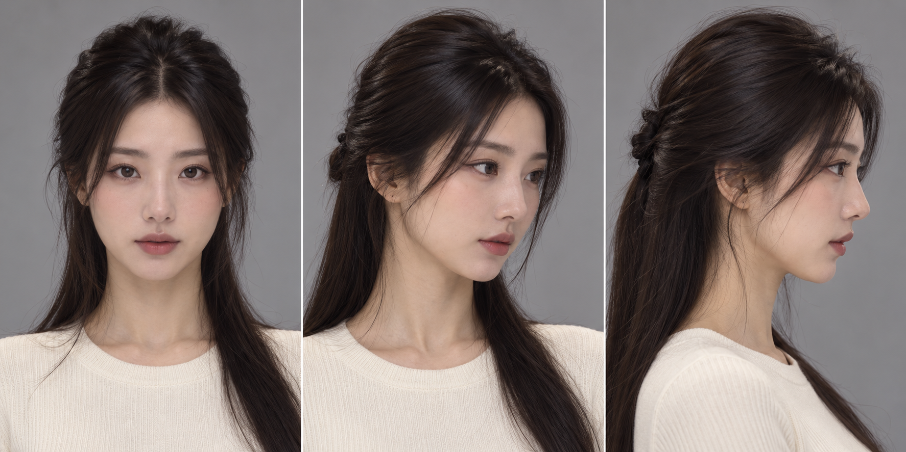
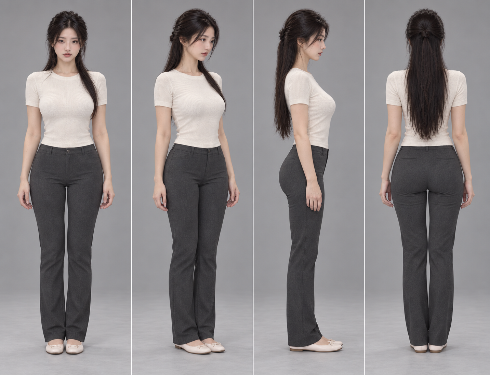
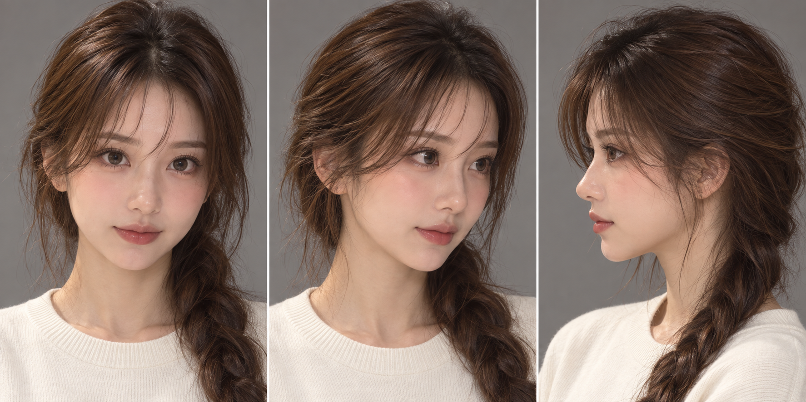
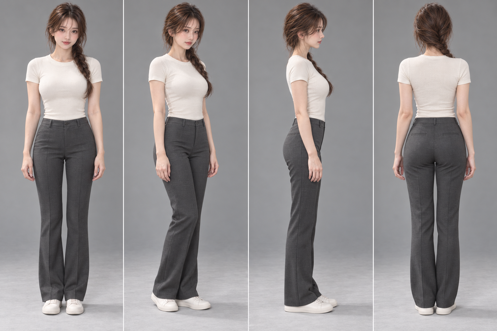
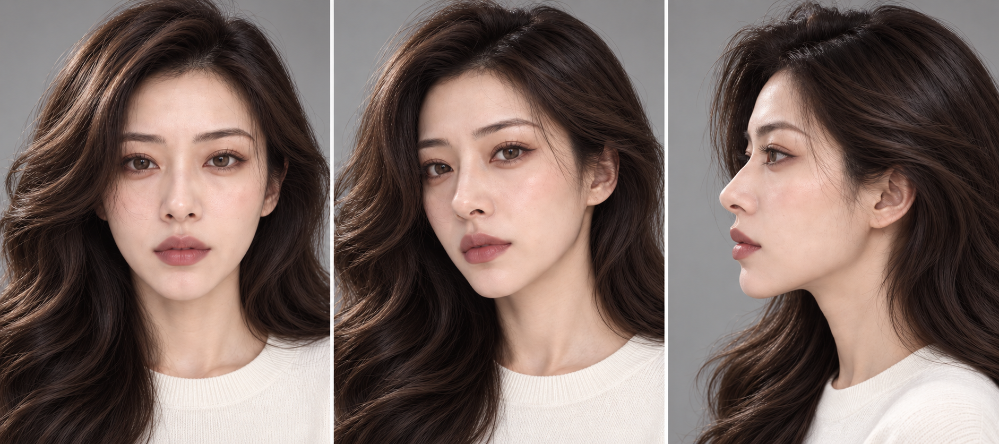
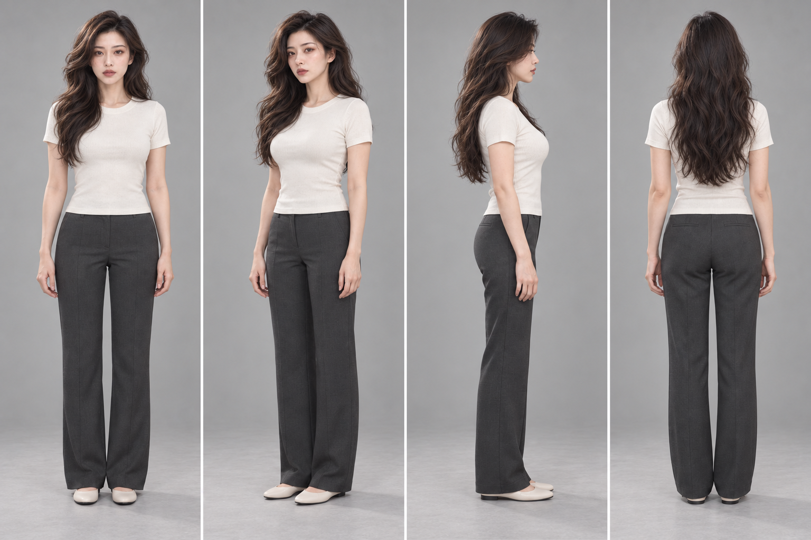
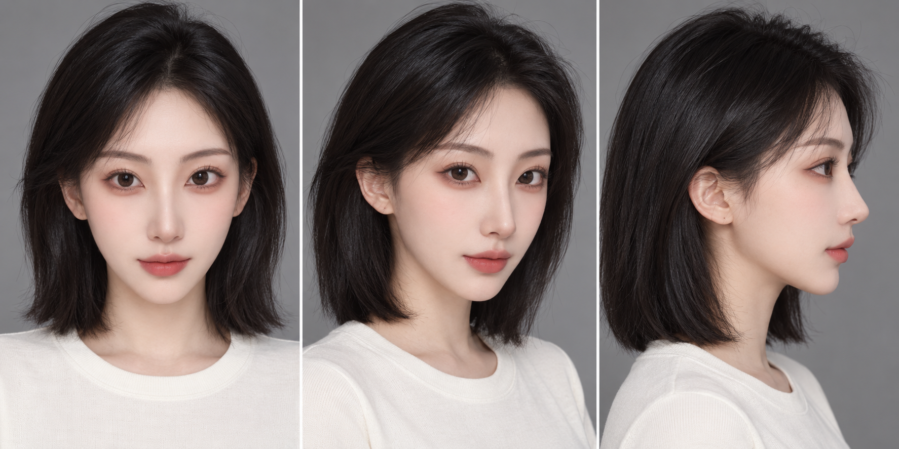
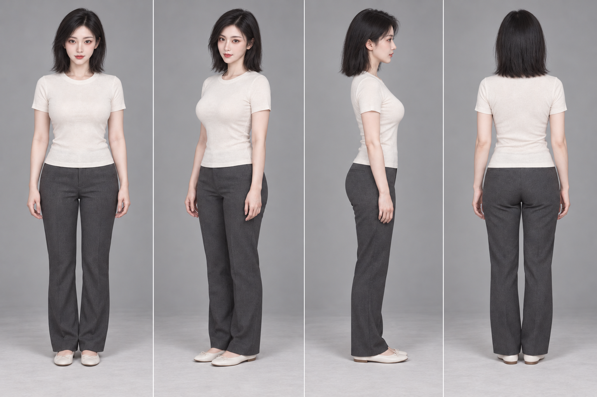
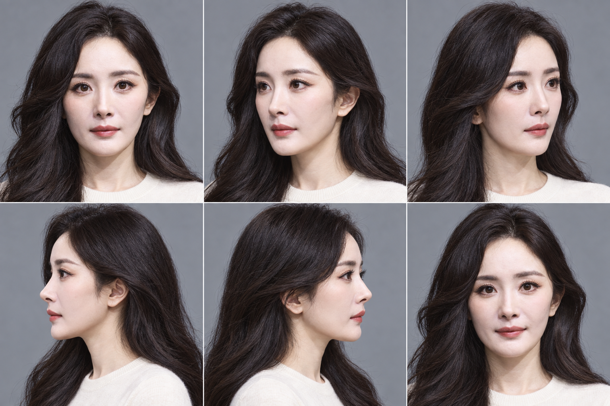
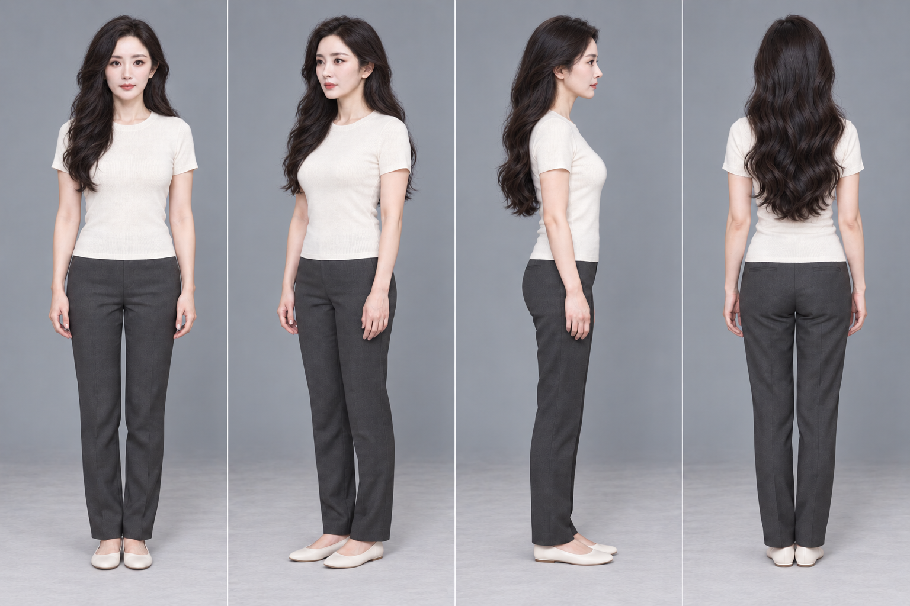

2026-09-30 · 5 位人物 · 10 张生成参考图 · GitHub 公开版
点击图片可查看原生文件。先比较同衣装下的脸型与妆发，再核对各角度。
修长鹅蛋脸与杏眼，近黑低位半扎直发。


饱满颊部、圆润成年杏眼，栗棕轻刘海低侧辫。


暖棕眼妆与玫瑰木唇，侧分发根体积与大 S 波浪。


保留面容，齐肩偏分短发、克制眼线与珊瑚玫瑰唇。


全部 31 张原照复核，六宫格重校眼鼻唇与颊颏；最新侧分长发、脸侧松弯，保留腿细直。

